Examples of Scopes Configurations
The following scenarios help understanding Scopes application and also provide information on the data displayed according to the applied configurations.
Scope Definition with Only Scope Rule Include Row
Consider a scenario, where you have a Scope definition with only a Scope Rule Include row to include all objects of the Management View. There are no rows with Scope Rule Excludes or any Scope Exceptions.
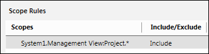
When the Scope is applied at run time, the users from the group to which this Scope definition is assigned can see the entire Management View.
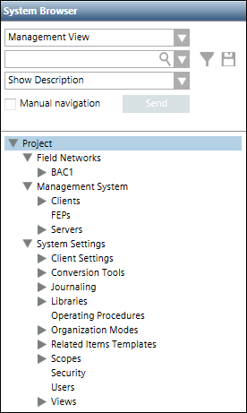
Scope Definition with Scope Rule Exclude Row below the Scope Rule Include Row Defined in Example 1
In this scenario, two Scope Rule Exclude rows are added to exclude the details of BACnet devices 2 and 3.
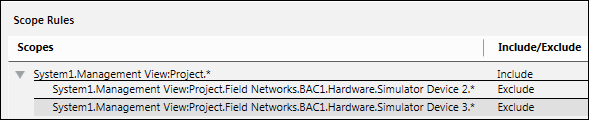
When the Scope is applied at run time, the users from the group to which this Scope definition is assigned, see the entire Management View, except the Device 2 and Device 3 nodes and their child nodes.
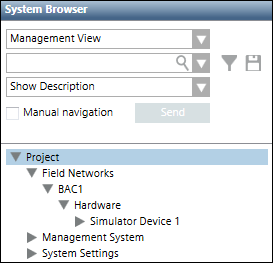
Scope Definition with One Scope Rule Include Row and One Scope Exception Row
In this scenario, we add a Scope Exception row to exclude the Field Networks node and all the child nodes below it in Management View.
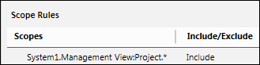
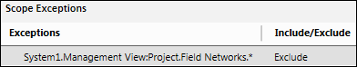
When the Scope is applied at run time, users from the group to which this Scope definition is assigned, see the entire Management View, except the Field Networks node and its child nodes.
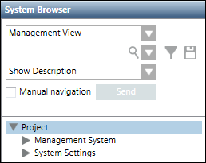
Scope Definition with a Scope Rule Include Row, Scope Rule Exclude Row, and a Scope Exception Exclude Row
In this scenario, we add two Scope Rule Exclude rows to exclude the details of Fire and Network libraries. Additionally, we also add a Scope Exception row to exclude the complete Libraries node.
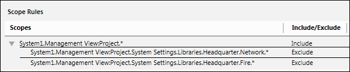
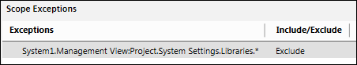
When the Scope is applied at run time, the details of the entire Management View except the Libraries node are visible to users from the group to which this definition is assigned. This is because the Libraries node was added to the Scope Exception Exclude row that has the highest priority in the Scope definition.
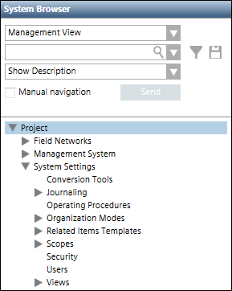
Scope Definition Containing Same Objects Referenced in Application and Logical Views
This Scope definition has a Scope Rule Include row to include all the objects of the Application View, a Scope Rule Exclude row to exclude the BACnet Schedules node and all its child nodes, and a second Scope Rule Include row that references the BACnet Schedules object from the Logical View.
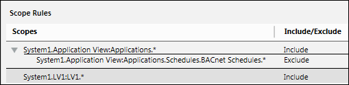
When this definition is assigned to a user group, all the users of this group will see the entire Application View including the BACnet Schedules node and all of its child nodes. This is because even if the BACnet Schedules node is excluded in the Scope Rule that is referenced from the Application View, the node is included in the second Scope Rule Include row that is referenced from the Logical View.
Output - Application View | Output - Logical View |
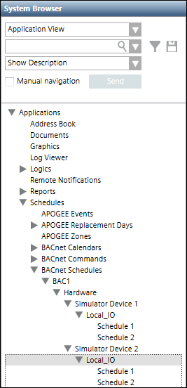 | 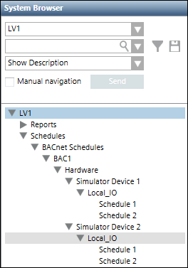 |